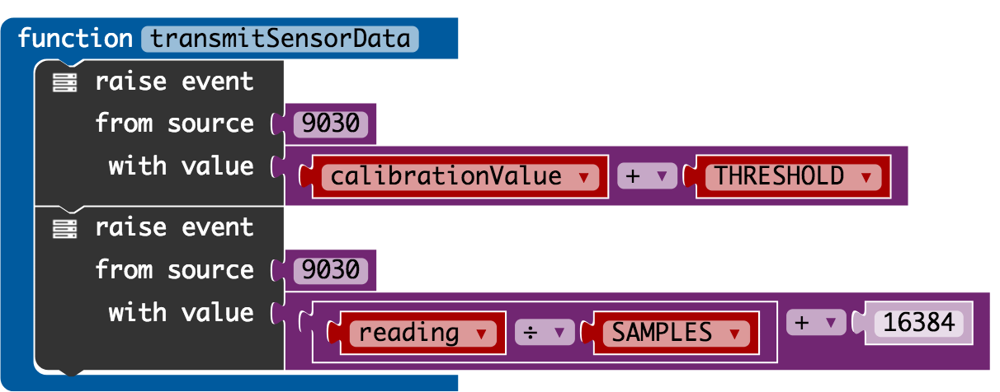
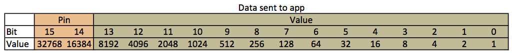

I have been experimenting with creating a 'home made' capacitive touch sensor for the micro:bit. During those experiments it became clear that I needed some way of accurately data logging the performance of different designs.
This is when I started to look around for a solution and took a look at the bitty data logger. It is a paid for app and at £1.99 it is not the cheapest however it did seem to do exactly what I was looking for. It was reassuring to see that it had good documentation and I had also seen positive feedback about it on Twitter so I took the plunge.
Bitty Software have done a tutorial for C++ and for MakeCode. It was using the MakeCode editor that I was interested in using so that is where I started.
I had the app reporting my sensor values in no time so it must be a good tutorial!
The tutorial talks about sending the "pin number and analog value read from that pin" and that worked well. However after using the app for a while I thought that it would help me more if I could send the calibrated reference value of the sensor as well as the ongoing averaged value. This is when I realised that I could send the data I required by thinking of the apps functionality as selecting channels of data rather than pins.

The data that is displayed in the bitty data logger on the phone is sent to it by raising a 9030 event.
The value of the event has the reading that you want charting plus the pin number.
In my code I am sending:
calibrationValue + THRESHOLD to be displayed as pin 0reading ÷ SAMPLES + 16384 to be displayed as pin 116384
to the reading is tell the app that the data is for Pin 1.

The app uses 16-bits to send the data from the micro:bit to the app. Of those 16-bits, it expects 2-bits for
the pin (or channel in my terminology) and 12-bits for the value to be displayed.
In the Bitty tutorial they do things properly and use bitwise operations to move the pin number along 14-bits
so the bits for the pin number take their rightful place in the data sent to the app.
By default I can not see that the MakeCode editor supports bitwise operations in the block editor. I worked around this by using the diagram above to see where the pin values should be in the data and calculate the denary values for the pins:
01 and when in bit location 15 & 14 the denary value is 16384.10 and when in bit location 15 & 14 the denary value is 32768.00 and when in bit location 15 & 14 the denary value is 0.
Being able to get charts like this in real time as I tweaked the design of the 'home made' capacitive touch sensor has been such a help I think the £1.99 was money well spent.